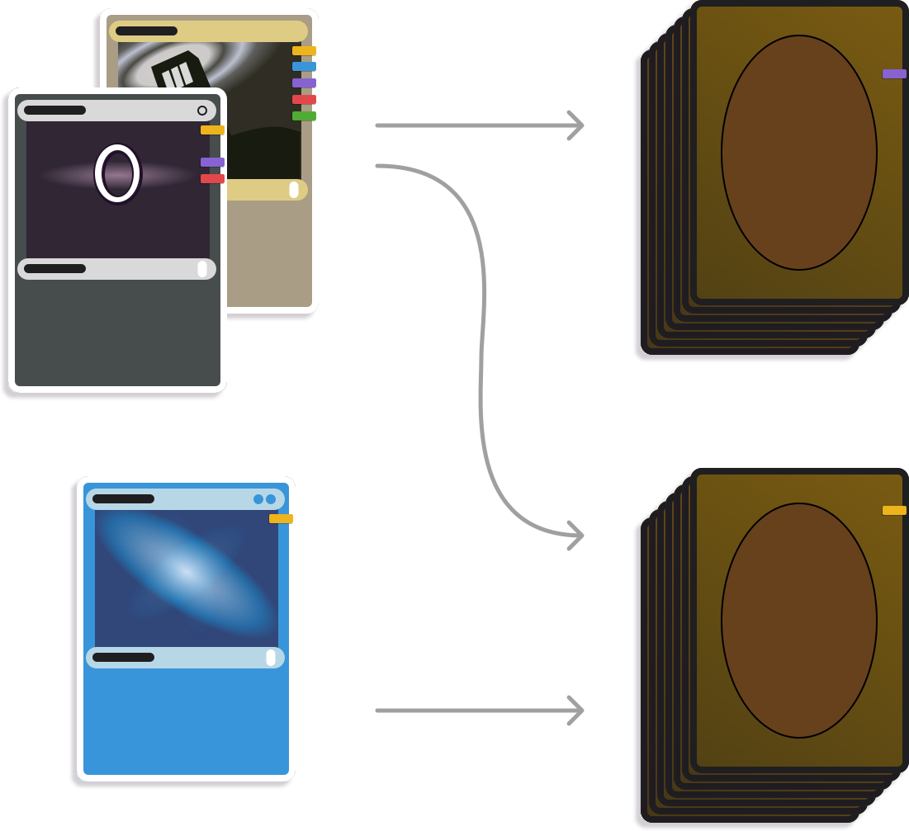
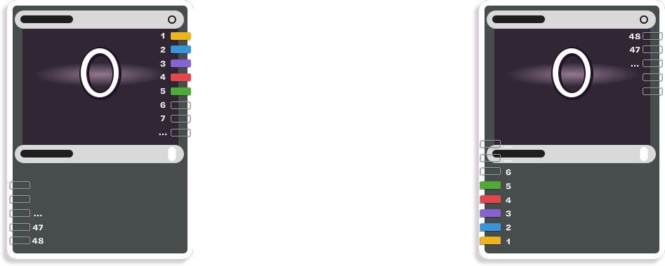
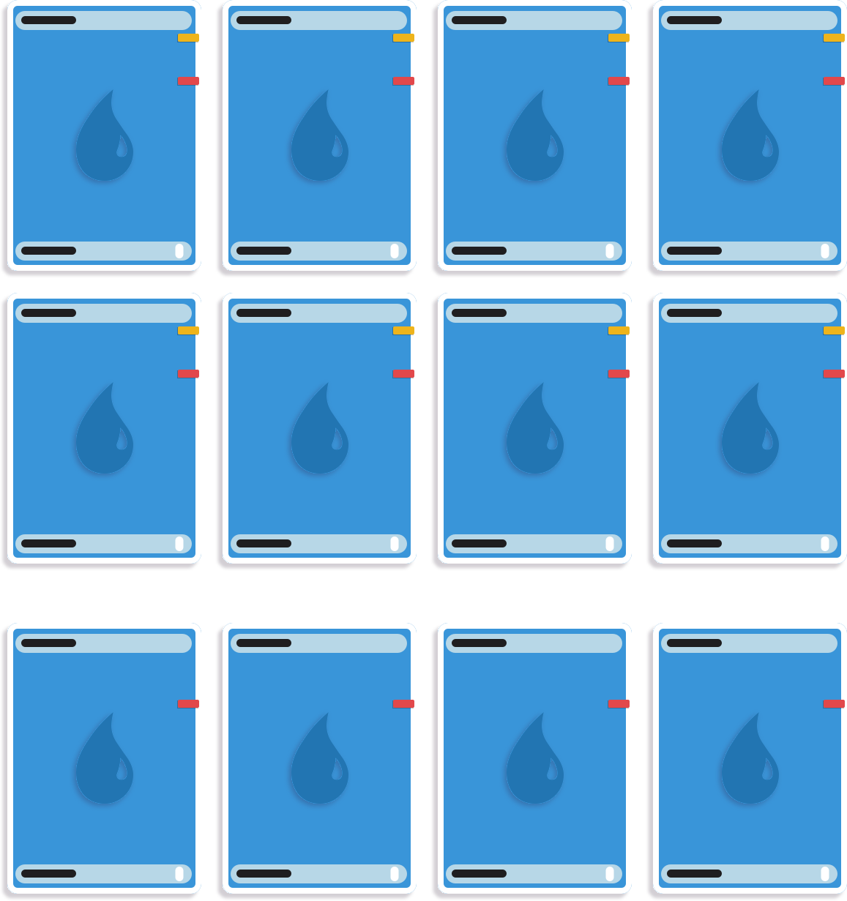
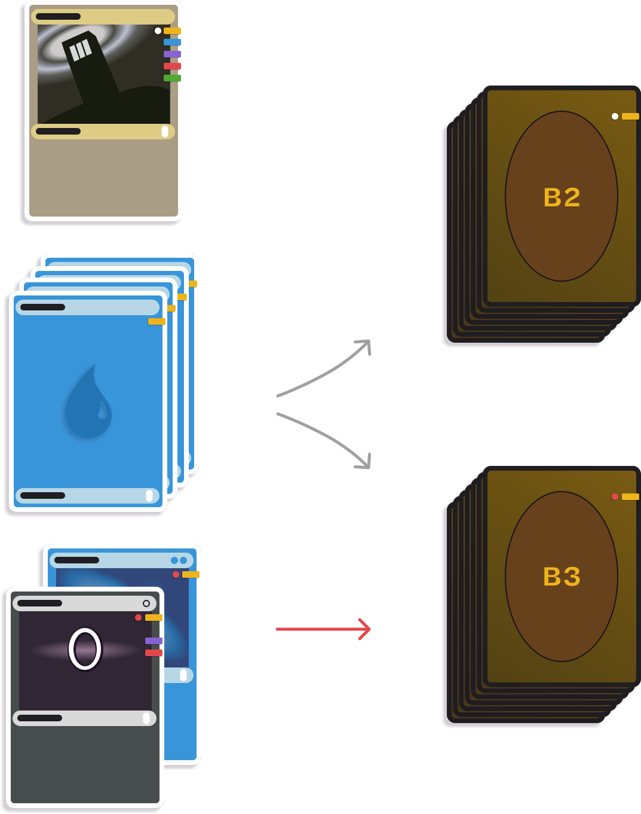

Sleeve Marking Guide
Share your staples across every deck. PRISM tracks what goes where so you don't have to.Read a marked sleeve
One physical copy of a card can serve every deck that needs it. You mark its sleeve once for each of those decks. The card then carries its own record of where it belongs.
Every mark goes on the Perfect Fit inner. That is the thin sleeve that sits against the card itself. An outer sleeve goes over the inner and protects the paint from handling. You never mark the outer sleeve, because outer sleeves wear out and get replaced.
A mark has two parts, a color and a slot. The color names the deck. The slot is the place along the sleeve edge where that color sits, and PRISM gives every deck a slot of its own.

The marks sit on the edge because the edge is what you see. Cards live in a box or in a fanned stack, and both show you edges. A mark on the card face would make you look at one card at a time.
Say your Atraxa deck is green at slot 3. Every sleeve with a green mark at slot 3 belongs to Atraxa. A sleeve with three marks belongs to three decks, and you pull that card for any of them. Nothing names one deck as the card's home, because a shared copy does not have one.
Two marks never collide, because no two decks share a slot. PRISM assigns the slots and holds them fixed, so a color you learn once stays where you learned it.
Tell Pool from Core
PRISM sorts every physical copy into one of two groups. A copy that two or more decks use is Pool. A copy that exactly one deck uses is Core.

Pool is the number that decides how few cards you buy. A Sol Ring in six decks is one Pool copy with six marks on it. It is not six cards.
Core copies still need a mark. A card with no mark tells you nothing once it sits in a stack of marked cards. So PRISM gives it the one mark for the deck that uses it.
A split group counts as one deck here. If every variant of a group uses a card, that card is Core, because only one deck needs it. Mark a split group covers what the variants then do with it.
If you turn on dedicated commander copies, each deck gets its own copy of its commander instead of sharing one. PRISM writes those copies as Core (dedicated). They are Core, not a third group.
Choose your slots and corner
A sleeve edge holds 48 slots. Slots 1 to 24 run along Side A. Slots 25 to 48 run along the opposite edge, Side B. PRISM gives each deck one slot and holds it there until you move the deck yourself.
Counting starts at one corner, and you choose which corner. All four work. The setting lives in the settings drawer, under the gear in the header.

Low slot numbers sit closest to the starting corner, so you find them without counting along the edge. Give those slots to the decks you play most. A deck you play once a year can live at slot 40 and cost you nothing.
Run a marking session
A marking session is one sitting that takes a stack of cards from unmarked to marked. Work one card at a time, not one deck at a time. Mark the Pool cards first, because they carry the most marks.
PRISM builds an undone list of every card that still needs a mark, with the number of copies for each one. Take that list to the table and work from it.
- Test the pen on a spare sleeve. Make sure the paint shows against the sleeve color. See Tools for pens that work.
- Take the inner sleeve out of the outer sleeve.
- Hold the sleeve in the jig, or against a straight edge.
- Paint a short line at the slot for the deck. A line of 3 to 7mm is enough.
- Paint the other marks that copy needs in the same pass.
- Put the inner sleeve back inside the outer sleeve.
- Check the card off in PRISM.
Set a line length you can repeat and keep to it. Marks that vary in length are harder to read at a glance than marks that vary only in color and place.


Double-sleeve every marked card. The outer sleeve protects the paint from handling. It also keeps the deck legal for play, because every card in it shows the same outer sleeve.
Count the copies you need
Most cards need one physical copy. Some need more, because two decks each want several of the same card.
Take basic lands. Deck A needs 12 Islands and Deck B needs 8. You do not buy 20. You buy 12. Eight of those twelve carry both decks' marks. The other four carry only Deck A's mark.

PRISM calls each of those groups a marking batch. A batch is a number of copies that all take the same set of marks. The twelve Islands are two batches, one of eight and one of four. The boundary between batches falls where the decklist quantities differ, and that boundary is a quantity tier.
Add the batches together and you get the Physical total, which is the number of copies to own. For the Islands above, the Physical total is 12.
You never mark all twelve Islands for both decks. Eight marked for Deck B is exactly enough, because Deck B never needs a ninth.
Basic lands are the loudest case, not a special case. Any card you run more than one of works the same way. So does a card that one deck runs four of and another runs two.
The Grouped by Mark filter shows the work one mark at a time. Each row is a single deck's mark on a number of copies, which is what your hand does at the table.
Mark a split group
A split group is one deck slot holding several builds of the same deck. PRISM calls those builds variants, and a group holds two to eight of them.
Every variant shares the group's Side A mark. A card that all the variants use gets that mark and nothing more. The group is one deck as far as your shelf is concerned.
A card that only some variants use needs a second mark to tell them apart. There are two styles, and you pick one for the whole group.
Stripes. Each variant gets a Side B mark on the opposite edge of the sleeve. A card that one variant needs carries that variant's Side B mark beside the group's Side A mark. This style holds two to eight variants.

Dots. Each variant gets a colored dot next to the group's Side A mark, on the same edge. This style holds exactly two variants, because the jig has one dot hole.
Pick dots when the group has two variants and you want the opposite edge left clear. Pick stripes for anything larger.
Fix a mark you no longer want
Three things go wrong with a mark. A deck stops needing the card. You paint the wrong slot. The paint smears before it dries.
When a deck stops needing a card, its mark becomes a stale mark. PRISM lists every stale mark under the Stale Marks filter and holds it there until you clear the sleeve.
Wet paint. Wipe it off at once with a dry cloth. Let the sleeve dry, then mark it again.
Dry paint. A dry paint pen mark does not come off cleanly. Replace the inner sleeve. An inner sleeve costs a few cents, and a solvent strong enough to lift dried paint can also cloud the sleeve.
- Move the card into a new inner sleeve.
- Mark the new sleeve with every mark the card still needs.
- Clear the stale mark in PRISM.